上次的活塞篇更新距离现在已经隔了2年了
大概以后再也不会更新类似的内容了，主要是be活塞就这点特性。
在活塞篇中我们讲了活塞在宏观上的运行延时，特性机制，不稳情况，以及续篇中观察者/活塞结合时的各种分析（虽然2年后的我看的也是挺枯燥的）。
这次我们探讨一些活塞的简单应用，为这个系列补上完美的句号。
1慢0快时序
什么是1慢0快时序？其实，如果我说abba相信大家一定不陌生，那么所谓的1慢0快时序指的就是abba时序中对b这个时序位的另一种说法，这里的1和0指的就是输出的电平而不是输入（也就是输入的信号电平不影响输出性质）；在现今机械电路中，这种时序的做法更是千奇百态，但如果只是为了追求高精度，可自由扩展，服务于高速机械电路的倒是比较少，我们借鉴于前辈je玩家的做法，自然的也可以使用活塞来完成这类的时序的需求。
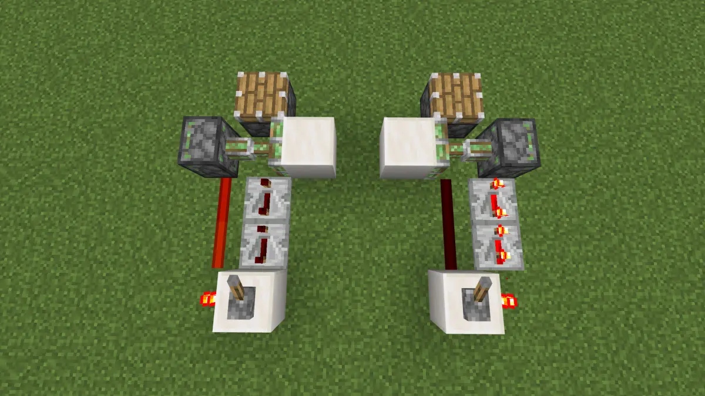
拉下拉杆，输出直观很慢，关闭拉杆，输出直观很快
可以观察到，这是一个典型的使用活塞推拉充能方块来实现的1慢0快时序。他们2者的区别就是左边的1慢时序基于中继器的上沿延时，而右边的1慢时序基于中继器的下沿延时。
不过值得注意的是，左边的0快时序并不是这个游戏中最快的，根据be启动延时理论的相关描述，最快的0快时序应该是经过拉杆1rt后就输出的，没有比这更快得了，也就是说目前不存在直观上0rt就输出的原件，即使有也无意义。
因为即使是拉杆直连但信号无非是在实际应用中作用于同步类元件，那么拉杆会给同步类元件一个1rt的启动延时，简称启延。而接上中继器这类计划刻元件时，他们本身就存在直观上的固有延时1rt，所以在实战理论层面没有0rt输出的信号，也就是说一些be活塞门视频中出现的无启动延时和这个的理解冲突了，但你可以理解成他们的无启动延时指的是已经把能压榨的延时到极限了。
所以上图的左边0快时序到底是第几rt才开始输出呢？
答案是左边3rt,右边1rt。
证明和计算延时略，感兴趣请看我往期专栏。
我们在评价一个原件时往往会考虑他的品质因素，通过他们来认为这原件的好坏及实用性，因be也有启动延时，活塞不稳情况，等等各种因素。
基于活塞推拉切压线的1慢0快时序
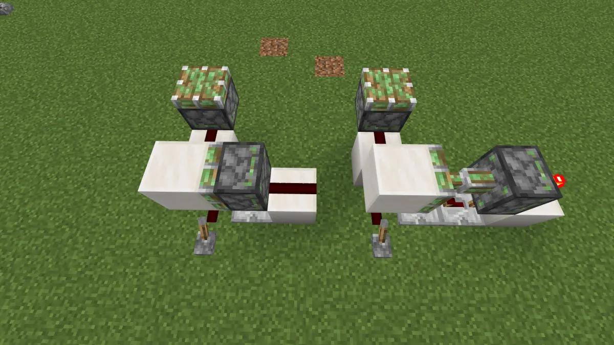
2者的区别，左边1慢时序基于活塞推出后通路，右边1慢时序基于活塞拉回后通路。
1慢时序的延时取决于中继器设置延时+活塞固有延时
0快时序的延时是固定1rt
若假设输出都用同步类元件，则此原件适用范围强，可用1档中继器输入。
上边沿触发器
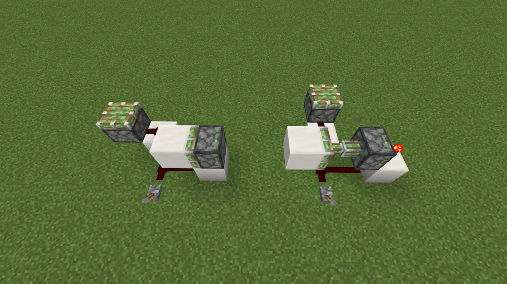
只在上边沿输出
2者的区别，左边基于上沿活塞推出压线断路，右边基于上沿活塞收回断路。
左边拉杆直接连接，输出2rt,中继器连接1rt，右边无论拉杆 /中继器连接都是2rt。
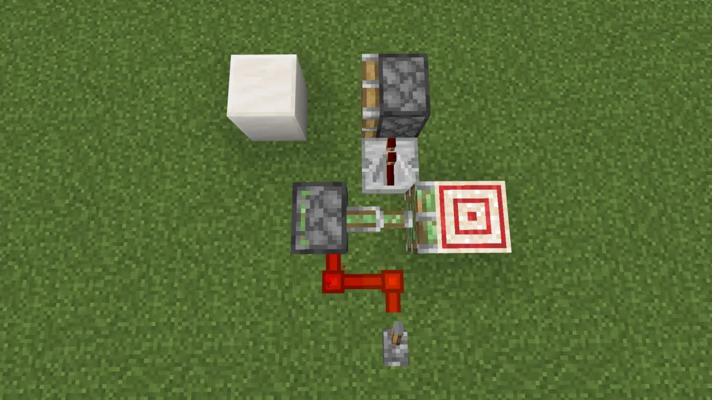
这种做法比较实用，体积小，同时也是上边沿输出1rt，同时带有实际应用时因红石能量衰减导致无法拉长线，就能做到正好解决了经典比较器做法会保真信号不放大无法拉长线，同时在1rt就输出的精时序要求。
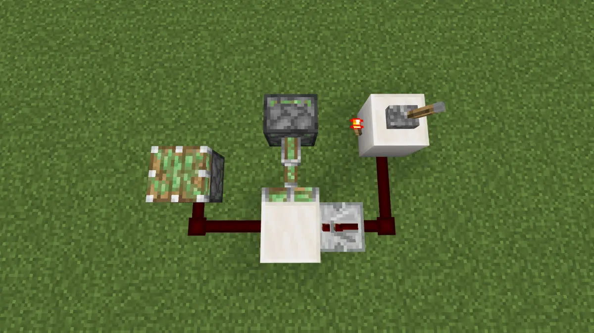
这也是个上边沿触发器，横版版本不太实用，把他做成竖版可能会实用些，应用于上下的传输1rt，同时他也是一个上沿c-tick脉冲触发器，关于什么是c-tick，这是国外的一种叫法，具体可以看cv12980256科普。
同时带有实际应用时因红石能量衰减导致无法拉长线，就能做到正好解决了经典比较器做法会保真信号不放大无法拉长线，同时在1rt就输出的精时序要求。
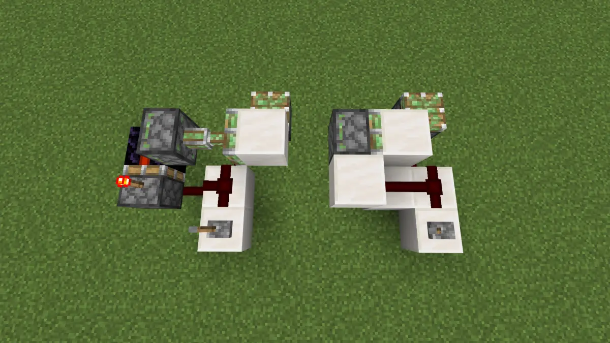
不难想到，再上面那种是红石线上坡的，那么可以扩展成下坡的做法，但这里只是开阔下思路，下文不再叙述。
下边沿触发器
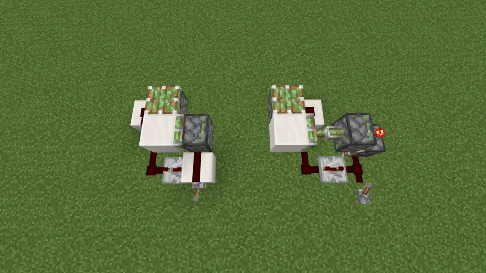
只在下边沿输出
2者的区别，左边基于下沿活塞收回通路后中继器剩余的电容信号，右边基于下沿活塞推出通路后中继器剩余的电容信号。
他们的下边沿输出都是2rt脉冲长度。
单稳态半脉冲触发器
什么是半脉冲？具体请看cv7876046科普。
简单说下原理是那个高频会每隔一次产生一个特殊信号，代码叫halfpulse，如果是accepthalfpulse的原件不会按照正常对信号源套路更新信号，而是直接置为0，所有才会有鬼畜现象，普通原件在遇到这个信号的时候按照信号源计算的信号就不会出现0
我也在以前做过经验结论：cv7121053
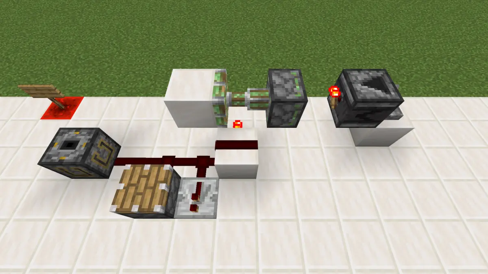
更新观察者输出性质电流
ps:如果没有搞错，可能我本人就是最早做出这玩意的。
目前认为的最简触发器。
检测元件响应行为：
能被激活的：红石火把、中继器、比较器、普通活塞、粘性活塞、红石灯、漏斗、各种材质围墙、音符盒、命令方块、普通铁轨（激活会在附近条件允许下变向）
不能被激活的：充能铁轨、激活铁轨、各种材质门、龙头、各种材质活板门、投掷器、发射器
上沿c-tick下沿p-tick
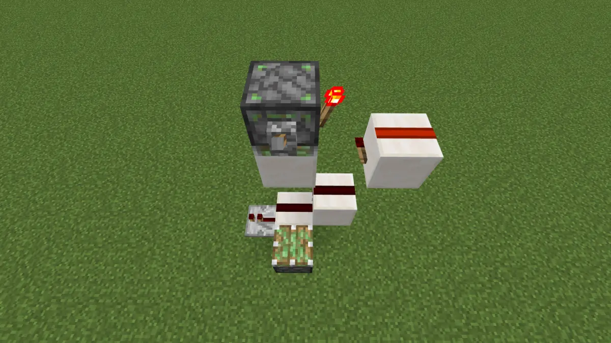
此部分分析略
双边沿触发c-tick/p-tick
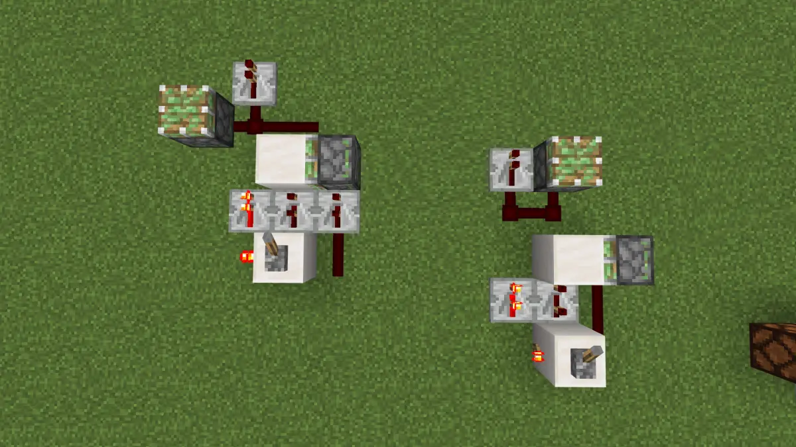
拉杆启动的上下沿都能产生他们的性质电流
基于活塞推拉切断信号产生俩种截然不同的双沿触发的最简电路横躺触发模块 2边拉杆上下沿都是能输出他们的性质电流。 接受这俩种信号有无行为的元件是分类的，这里选出了2个经典代表。 左边输出红石贴图可见（中继器输出，活塞不推出） 右边输出红石贴图不可见（中继器不输出，活塞推出）
具体宏观时序分析请看我以前的动态https://t.bilibili.com/454769137515402603?tab=2
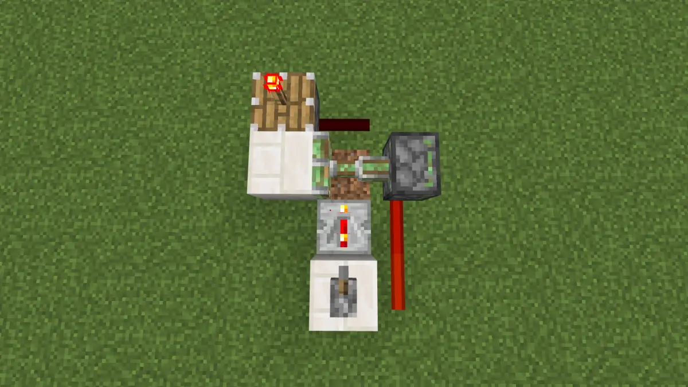
可以看到，p-tick也是一个很有意思的东西，输出这种信号后活塞不反应，插在活塞头上的红石火把正常亮灭，这有悖常理。
好了到此为止，正文就算结束了，接下来我们讨论下活塞出现的各种不稳定情况和少数稳定情况。
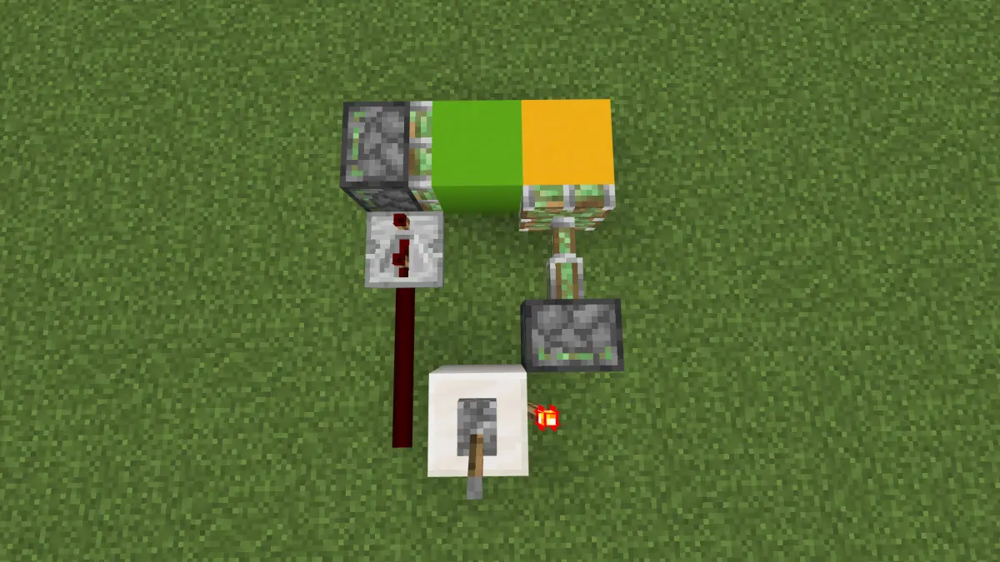
通过长激活的时序来测试此现象
be活塞推拉方块在离开一个位置后，另一个活塞可以在下一rt稳定进入该位置。其实在这件事在同rt内也有可能会互换（也就是你可以通过一些手段缓慢游戏看到可能出现的同时运动带来的方块重合，这在je经常用来做微观时序，许多门在慢速下方块重合） 但是be一直秉持着随机的风格，无法稳定，不能实现优先级，而je在同一gt内可以通过更新顺序来实现时序来达到一个活塞拉回另一个活塞可以在同gt推进来。
除此之外，在随机的区块更新顺序以及随机的方块实体更新顺序的加持下，BE的活塞之间也没有明显的优先级，随机之下，众生平等。
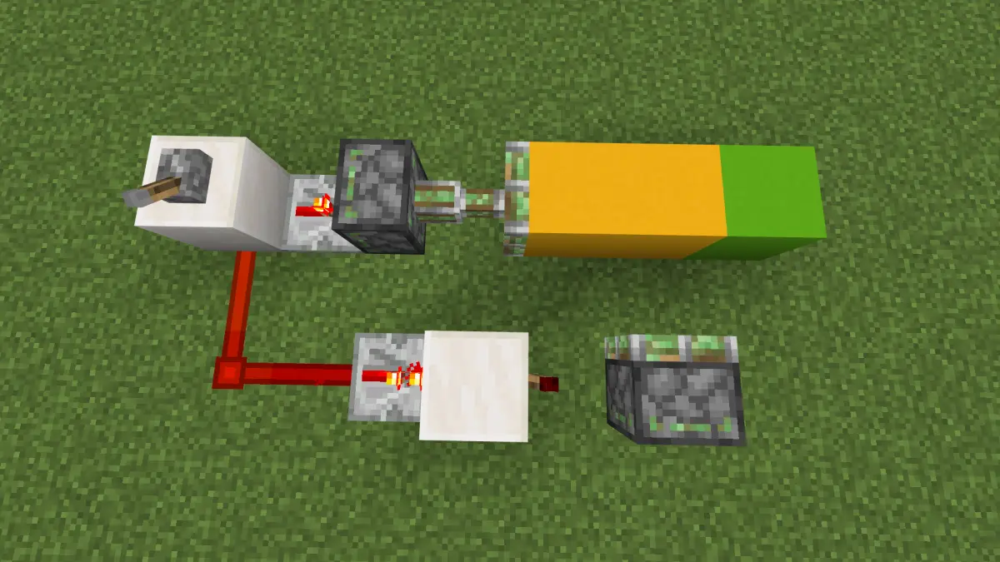
拉杆拉下，绿色方块不一定会被下面的活塞拉回。
理论上be活塞的本身和被推动方向上的所有方块都有一个"cd"，他们同时计时，也同时消失，可以通过外部电路因素干扰他们使得“cd”消失时间不一致，如活塞已冷却完成准备拉回，但是他将要拉回的方块还在冷却期。
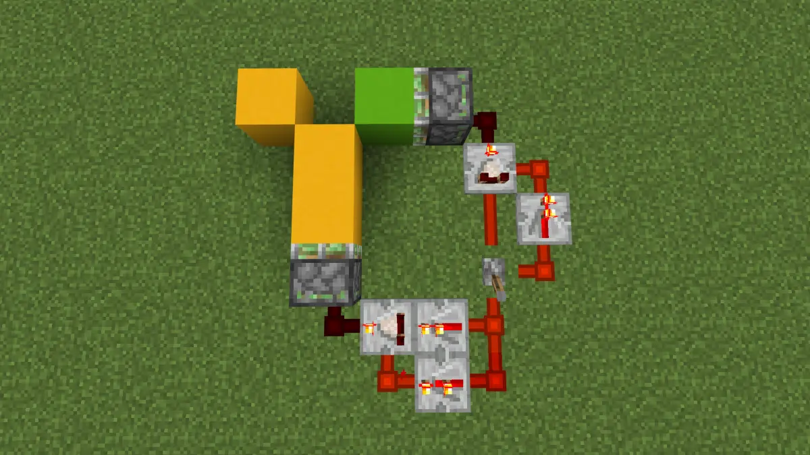
拉杆拉下，黄色方块不一定会推出。
此图分析略，具体请看cv10090504
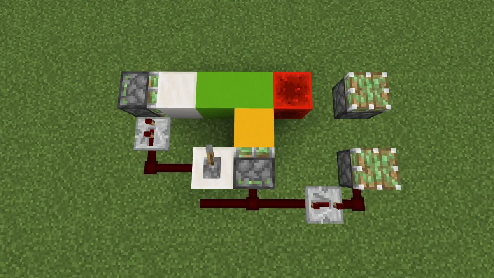
拉杆拉下，2路延时有可能同时。
黄色活塞推出之前被上一刻活塞替换掉柱子里的方块，可能会被干扰到下一rt才开始推出。
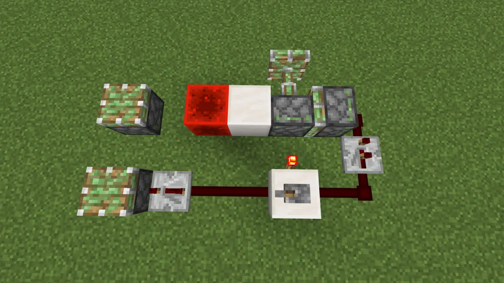
一个活塞刚收回就要被另一个活塞推走自己时，另一个活塞的推出可能会被干扰到下一rt才开始推出。
当活塞本身和他推动/拉回方向上的方块的冷却期不一致时，活塞会不稳定，脉冲情况就是可能推出/拉回，持续信号情况就是延时不稳定。
完结~~~